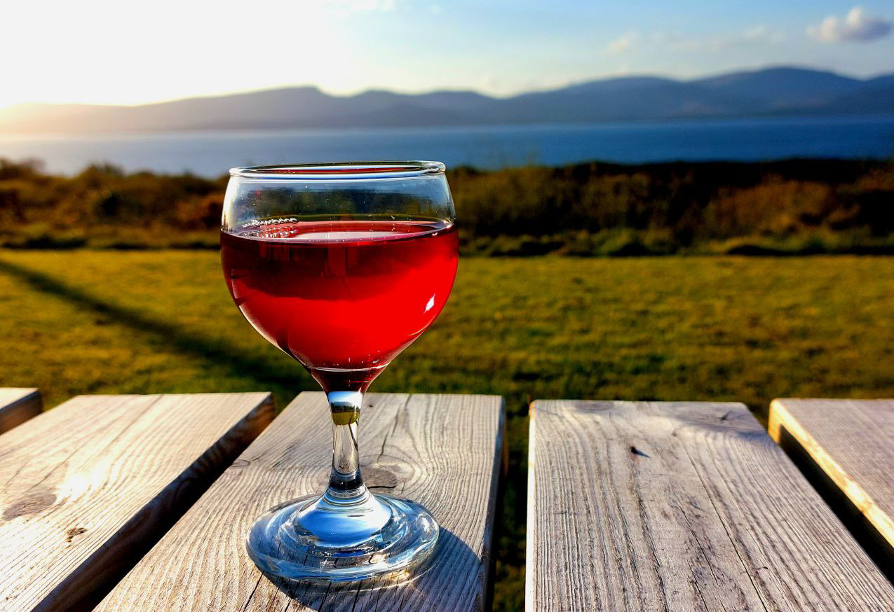
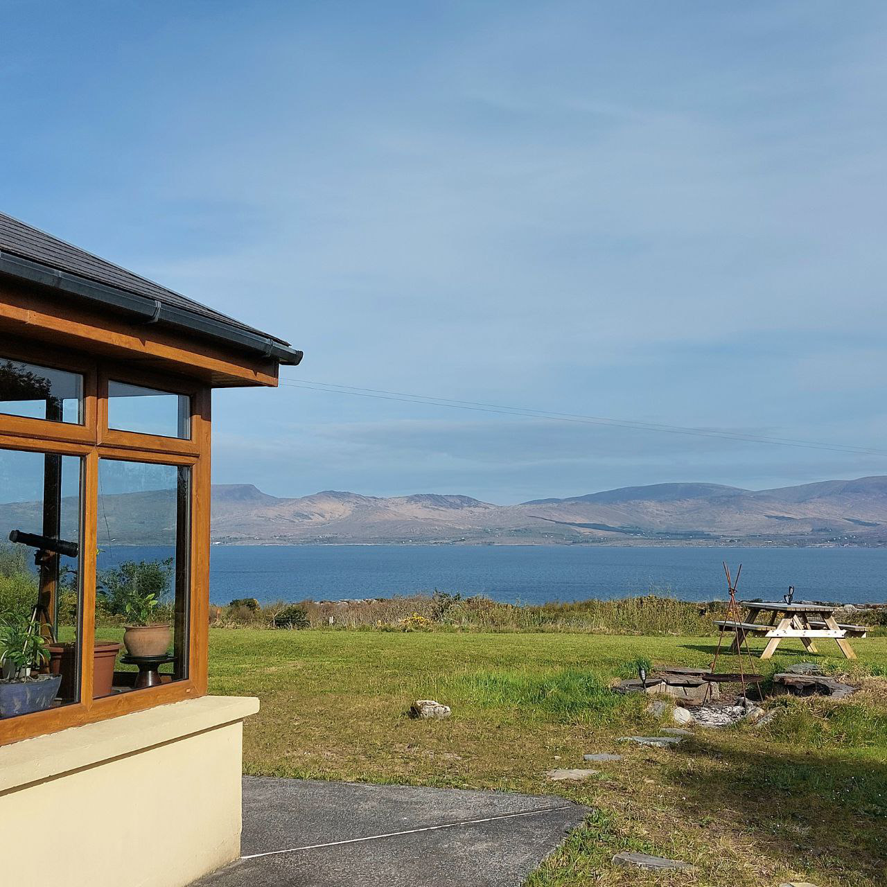
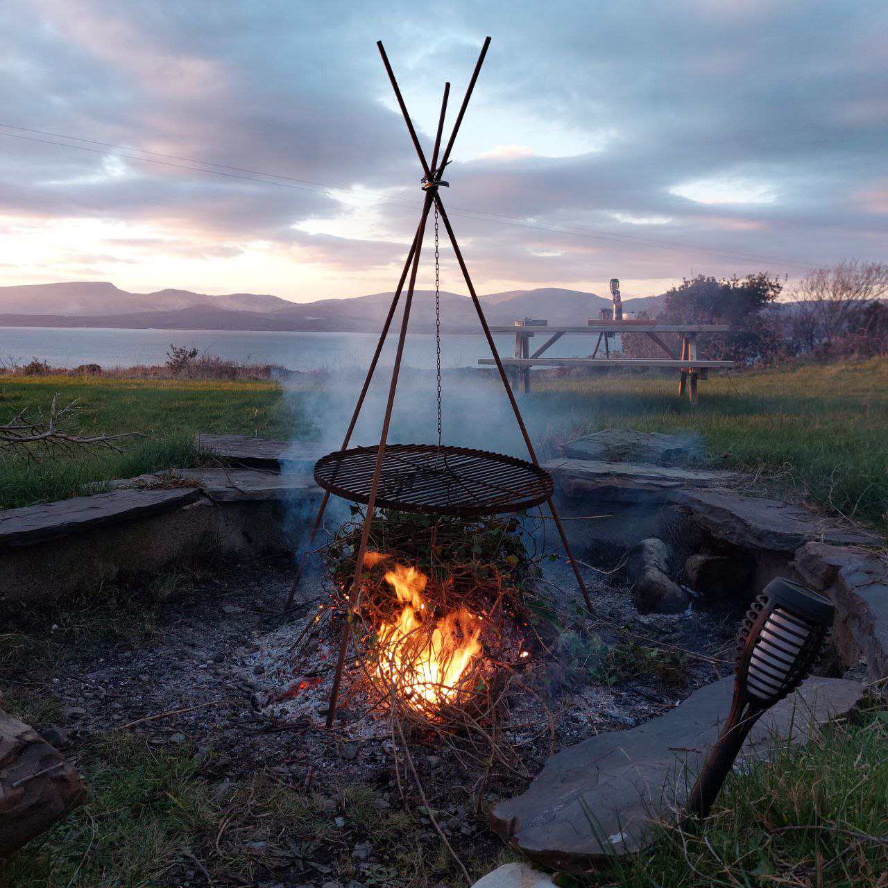
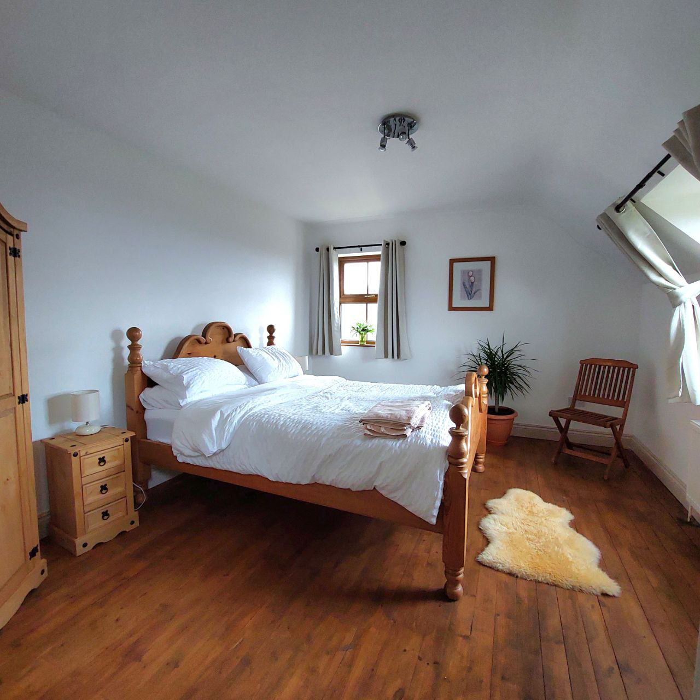
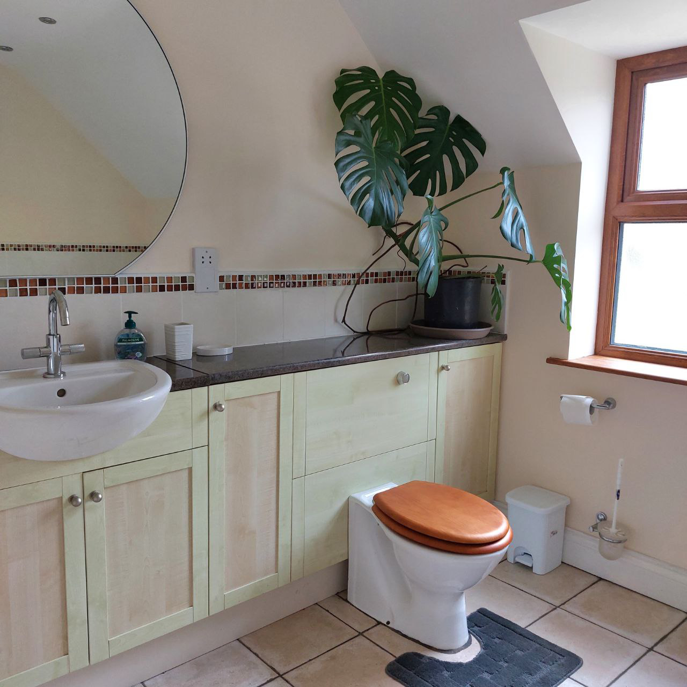
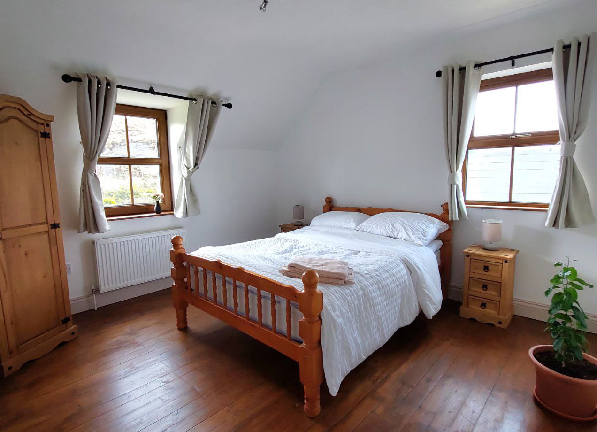
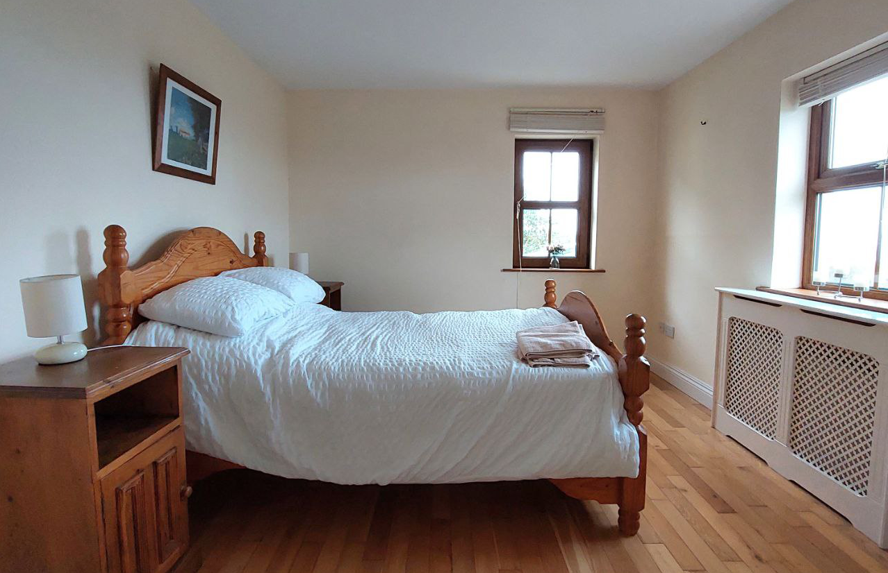
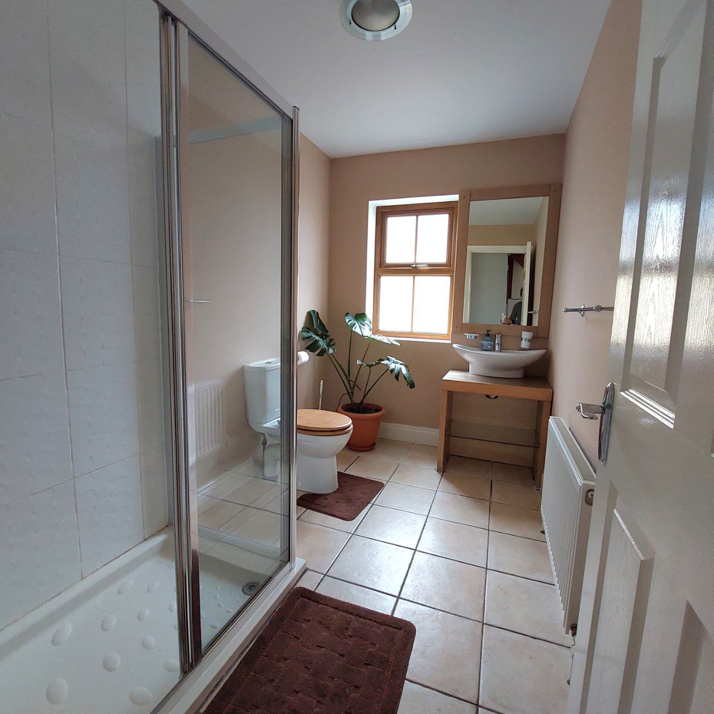
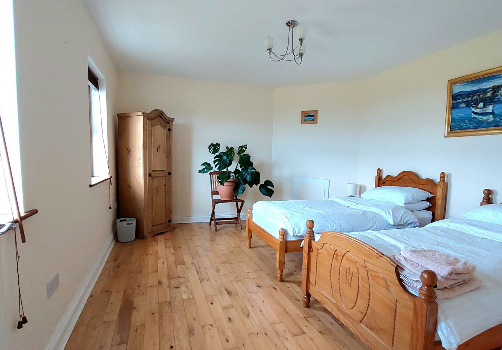

Our home
Welcome to the web site of Cleandra Bay Lodge, in the heart of the Beara Ring.
On the southwest coast of Ireland, only a few hours away from Cork, we sit on the edge of the wild Atlantic ocean with the range of the highest mountains in Ireland, (in the Ring of Kerry) visible on the other side of the Bay.
  
Within a short walk from us is Cleandra Bay, still a working port where a few small trawlers work the local inlets for Crabs, Lobster, Mussels and other delicacies of the sea, caught for sale to the larger restaurants in the area. Fresh "fruits" of the sea aplenty
With flights from Stanstead to Cork or Kerry at roughly 20 pounds a head and car hire for the weekend less than 30 pounds.
Bedroom 1
King size Bed
The king size bed is upstairs with a front view over the bay to Kerry's Mc Killacuddy Reeks.
  and
Bedroom 2 - Double room Upstairs
This room looks out across to the gateway to the Atlantic, where the sun can be seen to set over Scariff island.
Bedroom 3 - Double room Downstairs
on the ground floor with an equally beautiful view over the reeks and left to scarrif island
  
Bedroom 4 - Twin room
Perfect room for 2 people walking the beara way. views across the bay